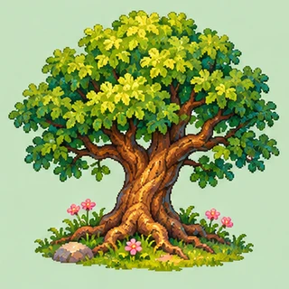
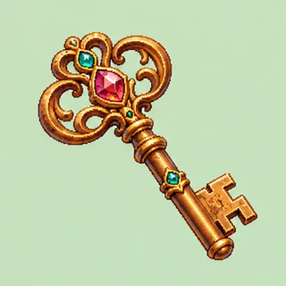
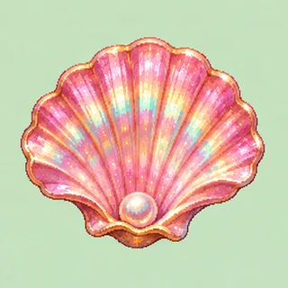
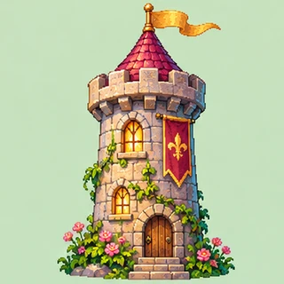
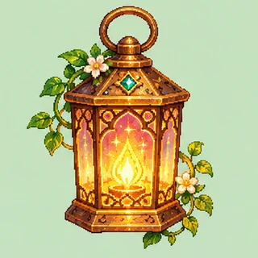

Magische TierwesenFantastic Beasts: The Wonder of Nature. Echte Tiere und ihre fantastischen Vorbilder. Englisch.

Die Welt der ErfindungenTechnik und Wissenschaft im Deutschen Museum. Deutsch, Englisch und einfache Sprache.

Dinos, Fossilien und KristalleDie Naturkunde-Ausstellungen des Smithsonian. Englisch.
Geheimnisse in BildernVermeers Gemaelde bis ins kleinste Detail entdecken. Englisch und Niederlaendisch.

Eine Reise nach Babylon360- und 3D-Rundgaenge der Staatlichen Museen zu Berlin. Deutsch.
Mit Paxi ins AllPlaneten, Raketen und kleine Weltraumabenteuer der ESA. Deutsch.

RaumfahrtwerkstattRover steuern, Sonden entdecken und das Weltall erforschen. NASA Space Place. Englisch.